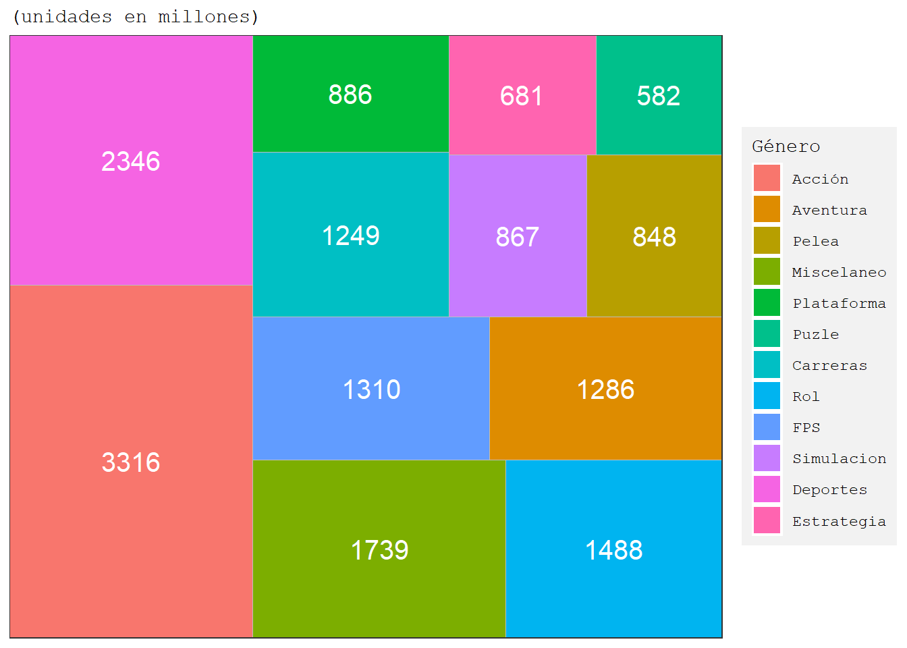
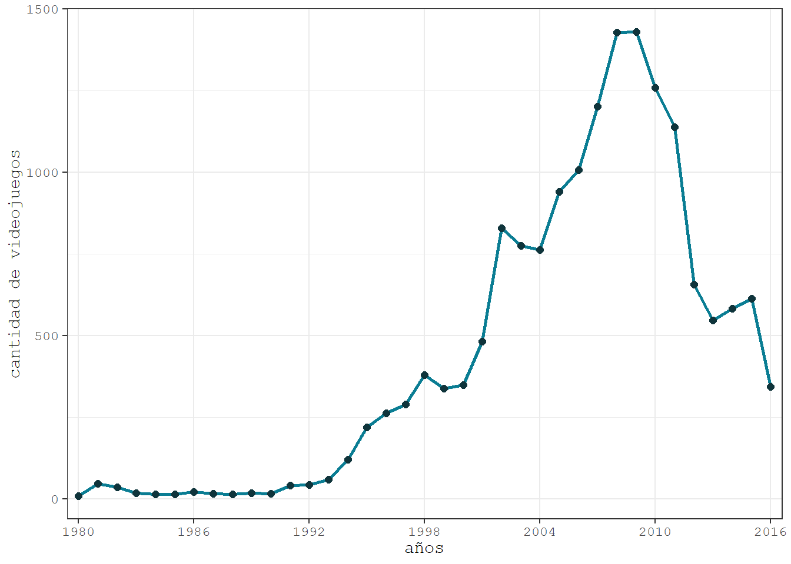
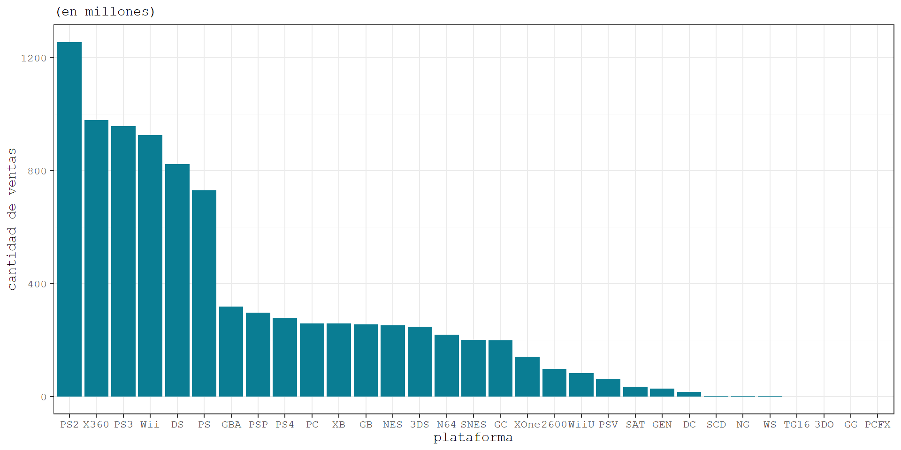
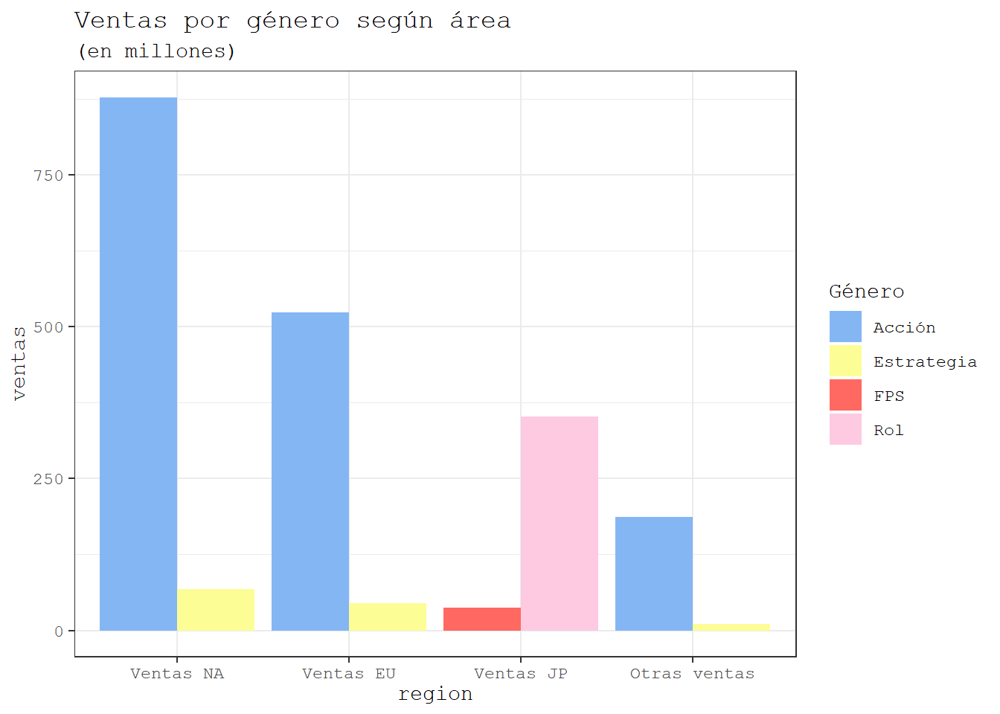
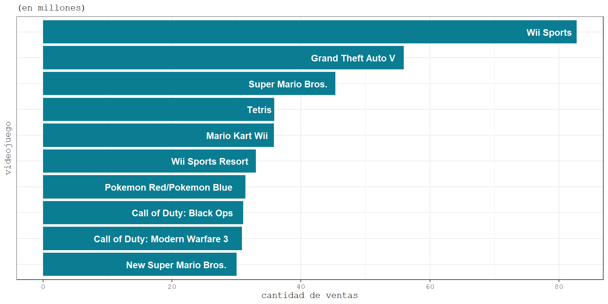
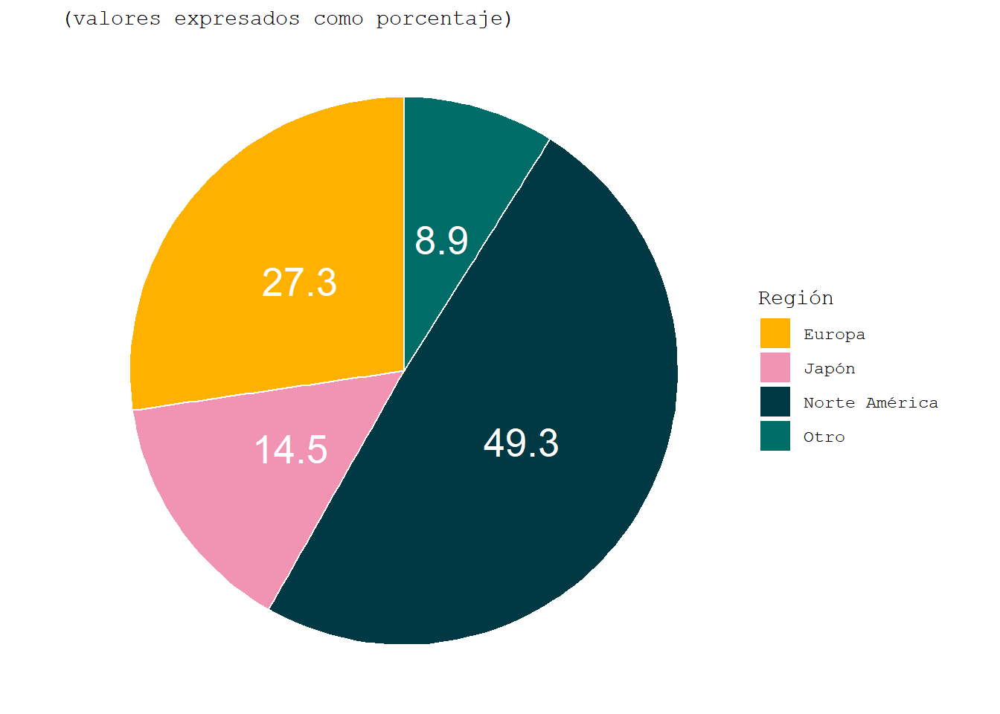

Análisis exploratorio de las ventas de 17.000 videojuegos
Resumen
Nos encontramos en un tiempo en donde la evolución de la tecnología ha avanzado lo suficiente como para reemplazar los tradicionales juegos de mesas, encuentros presenciales con amigos y/o familia. En lo que se enfoca este informe es en analizar los videojuegos, precisamente en cómo estos se han posicionado en el mercado a tal punto que es la industria con mayor flujo de dinero. Además de encontrar resultados interesantes como qué empresa se situa como la con mayor ganancia, o la con mayor ventas, tanto a nivel regional (continental) como global.
Introducción
En la historia, hemos visto cómo los videojuegos han ido evolucionando a medida que transcurre el tiempo. Podemos ver el cómo van mejorando sus motores gráficos, como también el catálogo de géneros de estos.
Gracias a esto, las preferencias de los usuarios también han ido variando. En los inicios solo había unos pocos juegos que se vendían masivamente y eran casi la única alternativa para entretenerse virtualmente. Ahora, dado a la masificación de la industria de los videojuegos, existen una gran cantidad de géneros y formatos para estos.
En este reporte analizaremos una base de datos que contiene videojuegos con ventas mayores a 100.000 copias alrededor del mundo, y están recopilados desde el año 1980 hasta el 2016.
Es relevante el analizar este tipo de información para tener una idea de cómo se comporta la gente a la hora de comprar una copia tanto física como digital según su continente. Este tipo de analisis favorece en gran parte a las desarrolladoras de juegos, debido a que les ayuda a cómo enfocar su marketing o en qué continente enfocarse más al momento de crear un juego.
Por lo cual, el objetivo de este análisis exploratorio es el entender cómo los datos están distribuidos e idealmente el poder generar conocimiento para la toma de decisiones en el futuro. Por otra parte, el enfoque de este es el explorar lo más posible los datos de la manera más simple, intuitiva e informativa. Para ello, principalmente haremos
- Análisis exploratorio: Nos adentraremos en los datos y responderemos algunas preguntas más especificas, que se detallarán más adelante.
Datos
Los datos a utilizar se obtuvieron de Kaggle, una plataforma comunitaria para Data Scientists y entusiastas del machine learning.
Empezamos familiarizandonos con nuestra base, la cual está compuesta por 11 variables:
| Variable | Tipo | Descripción |
|---|---|---|
Rank |
numérica | Ranking de ventas totales. |
Name |
caracter | Nombre del juego. |
Platform |
caracter | Plataforma de lanzamiento del juego. |
Year |
numérica | Año en el que el juego fue lanzado. |
Genre |
caracter | Género del juego. |
Publisher |
caracter | Empresa que publicó el juego. |
NA_Sales |
numérica | Ventas en Norte América (en millones). |
EU_Sales |
numérica | Ventas en Europa (en millones). |
JP_Sales |
numérica | Ventas en Japón (en millones). |
Other_Sales |
numérica | Ventas en el resto del mundo (en millones). |
Global_Sales |
numérica | Ventas mundiales totales (en millones). |
Realizando un pequeño análisis de las variables, notamos que los datos nos muestran las ventas de videojuegos separadas por continente. Además de contener distintos identificadores para poder empezar nuestro analisis exploratorio.
En este reporte se utilizarán todas las variables presentadas, y además no se necesita realizar ningun preprocesamiento de datos, esto gracias a que la base se encuentra completa y ordenada.
Análisis exploratorio
Lo primero que podríamos preguntarnos al ver esta tabla sería ¿cuál es el género que más se ha vendido a lo largo del tiempo?
Mostrar código.
# Importando los datos ----------------------------------------------------------------------------
datos <- read_csv(here("datos/vgsales.csv"))
# Gráfico 1: ¿Cuál es el género más repetido?------------------------------------------------------
row <- distinct(datos, Genre) # Cuantos géneros hay en la db
unicos_genre <- count(datos, Genre)
ggplot(unicos_genre, aes(area = n, fill = Genre, label = n)) +
geom_treemap()+
geom_treemap_text(colour = "white",
place = "centre",
size = 15)+
scale_fill_discrete(labels=c("Acción", "Aventura", "Pelea", "Miscelaneo", "Plataforma",
"Puzle", "Carreras", "Rol", "FPS", "Simulacion", "Deportes", "Estrategia"))+
labs(subtitle = "(unidades en millones)",
fill = "Género")+
theme_bw()+
theme(legend.background = element_rect(fill="gray95", size=.5, linetype="dotted"))+
theme(text = element_text(family = "mono"))
notamos que el género más vendido es Acción, con más de 3300 millones de copias, seguido Deportes con aproximadamente 2400 millones de copias y en tercera posicion se encuentra Misceláneo, con un aproximado de 1750 millones copias vendidas.
Si bien este gráfico es informativo y de gran utilidad, nos surge la duda el saber cuándo y donde se presentaron las ventas. Para esto, tenemos el siguiente gráfico.
Mostrar código.
# Gráfico 2: ¿Cuál fue el año con mayor lanzamientos?----------------------------------------------
unicos_year <- count(datos, Year)
unicos_year <- filter(unicos_year, Year != "N/A",
!row_number() %in% c(38,39))
ggplot(unicos_year,(aes(x = Year, y = n, group = 1)))+
geom_line(color = "#0a7d93", size = 1)+
geom_point(color = "#0f343b", size = 2)+
labs(
y = "cantidad de videojuegos",
x = "años")+
scale_x_discrete(breaks = seq(1980, 2016, by = 6))+
theme_bw()+
theme(text = element_text(family = "mono"))
Podemos observar en la Figura 2, que el año en donde más se lanzaron videojuegos al mercado fué el año 2009, con cerca de 1500 Millones de copias. También, desde ese año en adelante, se genera una tendencia a disminuir la cantidad de videojuegos lanzados. Esto se podría explicar debido a varios factores, una opción podría ser que las desarrolladoras empezaron a preocuparse más en realizar menos lanzamientos pero de una mayor calidad, o bien se podría relacionar con la salida de la séptima generación de videoconsolas (PlayStation 3, Xbox 360, Wii), puestas a disposición del público alrededor del año 2007.
Analizando más detalladamente el año con mayor lanzamiento de videojuegos, se nos presenta el siguiente gráfico.
Mostrar código.
datos |>
filter(Year == 2009) |>
count(Platform) |>
ggplot(aes(x = reorder(Platform,-n), y = n))+
geom_bar(stat="identity", fill = "#0a7d93")+
labs(x = "plataforma",
y = "ventas")+
geom_text(aes(label = n),
vjust = 1.1,
color = "white",
fontface = "bold")+
theme_bw()+
theme(text = element_text(family = "mono"))
Se aprecia claramente la moda de lanzamientos de ese año, la cual fué para la plataforma Nintendo DS, con 405 videojuegos. En segundo lugar tenemos a la Nintendo Wii con 325 videojuegos y en tercer lugar a la Xbox 360, con 173 lanzamientos. Notamos que el primer y segundo lugar de lanzamientos del año 2009 estuvo bajo Nintendo. Esto se puede explicar, al igual que la Figura 2, por la llegada de las consolas de séptima generación, que en este caso vendría por parte de la consola Nintendo DSi y Nintendo Wii, los años 2008 y 2006 respectivamente.Ver Anexo
Cabe destacar que para esta base de datos, la plataforma DS abarca a Nintendo DS, Nintendo DS Lite, Nintendo DSi y Nintendo DSi XL. Sin embargo, todas estas consolas pertenencen a la séptima generación.
Devolviendonos un poco del foco de Nintendo, otra pregunta bastante relevante sería el cuestionarnos si esta empresa de entretenimiento ha sido la plataforma con más ventas a traves del tiempo.
Mostrar código.
# Gráfico xx: Qué plataforma ha vendido más--------------------------------------------------------
datos |>
group_by(Platform) |>
summarise(sum = sum(Global_Sales)) |>
ggplot(aes(x = reorder(Platform, -sum), y = sum))+
geom_bar(stat="identity", fill = "#0a7d93" )+
labs(x = "plataforma",
y = "cantidad de ventas",
subtitle = "(en millones)")+
theme_bw()+
theme(text = element_text(family = "mono"))
nos percatamos que la plataforma con más ventas históricamente es la PS2 (Playstation 2), con más de 1200 millones de copias de videojuegos vendidas. Esto se puede explicar dado que esta consola fué lanzada a inicios del 2000 4 años antes que la Nintendo DS y 6 años de la Nintendo Wii, además de ser la videoconsola más vendida de todos los tiempos, con más de 155 millones de unidades. Ver Artículo
Siguiendo con el análisis, otra pregunta que surge es cuál es género más y menos vendido. Para esto usamos una tabla para mayor facilidad de indentificar el mayor y menor valor.
Mostrar código.
# Tabla 1: Comparativa de ventas por género--------------------------------------------------------
## Action -----------------------------------------------------------------------------------------
action_na <- filter(datos, Genre == "Action")
action_na <- count(action_na, NA_Sales)
act_na <- 0
for(i in 1:221){
act_na <- act_na + action_na[i,1]*action_na[i,2]
}
action_eu <- filter(datos, Genre == "Action")
action_eu <- count(action_eu, EU_Sales)
act_eu <- 0
for(i in 1:170){
act_eu <- act_eu + action_eu[i,1]*action_eu[i,2]
}
action_jp <- filter(datos, Genre == "Action")
action_jp <- count(action_jp, JP_Sales)
act_jp <- 0
for(i in 1:94){
act_jp <- act_jp + action_jp[i,1]*action_jp[i,2]
}
action_other <- filter(datos, Genre == "Action")
action_other <- count(action_other, Other_Sales)
act_other <- 0
for(i in 1:86){
act_other <- act_other + action_other[i,1]*action_other[i,2]
}
action <- unlist(c(act_na, act_eu, act_jp, act_other))
## Adventure --------------------------------------------------------------------------------------
adventure_na <- filter(datos, Genre == "Adventure")
adventure_na <- count(adventure_na, NA_Sales)
adv_na <- 0
for(i in 1:78){
adv_na <- adv_na + adventure_na[i,1]*adventure_na[i,2]
}
adventure_eu <- filter(datos, Genre == "Adventure")
adventure_eu <- count(adventure_eu, EU_Sales)
adv_eu <- 0
for(i in 1:65){
adv_eu <- adv_eu + adventure_eu[i,1]*adventure_eu[i,2]
}
adventure_jp <- filter(datos, Genre == "Adventure")
adventure_jp <- count(adventure_jp, JP_Sales)
adv_jp <- 0
for(i in 1:50){
adv_jp <- adv_jp + adventure_jp[i,1]*adventure_jp[i,2]
}
adventure_other <- filter(datos, Genre == "Adventure")
adventure_other <- count(adventure_other, Other_Sales)
adv_other <- 0
for(i in 1:29){
adv_other <- adv_other + adventure_other[i,1]*adventure_other[i,2]
}
adventure <- unlist(c(adv_na, adv_eu, adv_jp, adv_other))
## Fighting ---------------------------------------------------------------------------------------
fighting_na <- filter(datos, Genre == "Fighting")
fighting_na <- count(fighting_na, NA_Sales)
fig_na <- 0
for(i in 1:129){
fig_na <- fig_na + fighting_na[i,1]*fighting_na[i,2]
}
fighting_eu <- filter(datos, Genre == "Fighting")
fighting_eu <- count(fighting_eu, EU_Sales)
fig_eu <- 0
for(i in 1:85){
fig_eu <- fig_eu + fighting_eu[i,1]*fighting_eu[i,2]
}
fighting_jp <- filter(datos, Genre == "Fighting")
fighting_jp <- count(fighting_jp, JP_Sales)
fig_jp <- 0
for(i in 1:77){
fig_jp <- fig_jp + fighting_jp[i,1]*fighting_jp[i,2]
}
fighting_other <- filter(datos, Genre == "Fighting")
fighting_other <- count(fighting_other, Other_Sales)
fig_other <- 0
for(i in 1:46){
fig_other <- fig_other + fighting_other[i,1]*fighting_other[i,2]
}
fighting <- unlist(c(fig_na, fig_eu, fig_jp, fig_other))
## Misc -------------------------------------------------------------------------------------------
misc_na <- filter(datos, Genre == "Misc")
misc_na <- count(misc_na, NA_Sales)
mis_na <- 0
for(i in 1:159){
mis_na <- mis_na + misc_na[i,1]*misc_na[i,2]
}
misc_eu <- filter(datos, Genre == "Misc")
misc_eu <- count(misc_eu, EU_Sales)
mis_eu <- 0
for(i in 1:118){
mis_eu <- mis_eu + misc_eu[i,1]*misc_eu[i,2]
}
misc_jp <- filter(datos, Genre == "Misc")
misc_jp <- count(misc_jp, JP_Sales)
mis_jp <- 0
for(i in 1:85){
mis_jp <- mis_jp + misc_jp[i,1]*misc_jp[i,2]
}
misc_other <- filter(datos, Genre == "Misc")
misc_other <- count(misc_other, Other_Sales)
mis_other <- 0
for(i in 1:65){
mis_other <- mis_other + misc_other[i,1]*misc_other[i,2]
}
misc <- unlist(c(mis_na, mis_eu, mis_jp, mis_other))
## Platform ---------------------------------------------------------------------------------------
platform_na <- filter(datos, Genre == "Platform")
platform_na <- count(platform_na, NA_Sales)
pla_na <- 0
for(i in 1:175){
pla_na <- pla_na + platform_na[i,1]*platform_na[i,2]
}
platform_eu <- filter(datos, Genre == "Platform")
platform_eu <- count(platform_eu, EU_Sales)
pla_eu <- 0
for(i in 1:120){
pla_eu <- pla_eu + platform_eu[i,1]*platform_eu[i,2]
}
platform_jp <- filter(datos, Genre == "Platform")
platform_jp <- count(platform_jp, JP_Sales)
pla_jp <- 0
for(i in 1:101){
pla_jp <- pla_jp + platform_jp[i,1]*platform_jp[i,2]
}
platform_other <- filter(datos, Genre == "Platform")
platform_other <- count(platform_other, Other_Sales)
pla_other <- 0
for(i in 1:56){
pla_other <- pla_other + platform_other[i,1]*platform_other[i,2]
}
platform <- unlist(c(pla_na, pla_eu, pla_jp, pla_other))
## Puzzle------------------------------------------------------------------------------------------
puzzle_na <- filter(datos, Genre == "Puzzle")
puzzle_na <- count(puzzle_na, NA_Sales)
puz_na <- 0
for(i in 1:83){
puz_na <- puz_na + puzzle_na[i,1]*puzzle_na[i,2]
}
puzzle_eu <- filter(datos, Genre == "Puzzle")
puzzle_eu <- count(puzzle_eu, EU_Sales)
puz_eu <- 0
for(i in 1:60){
puz_eu <- puz_eu + puzzle_eu[i,1]*puzzle_eu[i,2]
}
puzzle_jp <- filter(datos, Genre == "Puzzle")
puzzle_jp <- count(puzzle_jp, JP_Sales)
puz_jp <- 0
for(i in 1:68){
puz_jp <- puz_jp + puzzle_jp[i,1]*puzzle_jp[i,2]
}
puzzle_other <- filter(datos, Genre == "Puzzle")
puzzle_other <- count(puzzle_other, Other_Sales)
puz_other <- 0
for(i in 1:27){
puz_other <- puz_other + puzzle_other[i,1]*puzzle_other[i,2]
}
puzzle <- unlist(c(puz_na, puz_eu, puz_jp, puz_other))
## Racing------------------------------------------------------------------------------------------
racing_na <- filter(datos, Genre == "Racing")
racing_na <- count(racing_na, NA_Sales)
rac_na <- 0
for(i in 1:155){
rac_na <- rac_na + racing_na[i,1]*racing_na[i,2]
}
racing_eu <- filter(datos, Genre == "Racing")
racing_eu <- count(racing_eu, EU_Sales)
rac_eu <- 0
for(i in 1:125){
rac_eu <- rac_eu + racing_eu[i,1]*racing_eu[i,2]
}
racing_jp <- filter(datos, Genre == "Racing")
racing_jp <- count(racing_jp, JP_Sales)
rac_jp <- 0
for(i in 1:66){
rac_jp <- rac_jp + racing_jp[i,1]*racing_jp[i,2]
}
racing_other <- filter(datos, Genre == "Racing")
racing_other <- count(racing_other, Other_Sales)
rac_other <- 0
for(i in 1:62){
rac_other <- rac_other + racing_other[i,1]*racing_other[i,2]
}
racing <- unlist(c(rac_na, rac_eu, rac_jp, rac_other))
## Role-Playing------------------------------------------------------------------------------------
role_na <- filter(datos, Genre == "Role-Playing")
role_na <- count(role_na, NA_Sales)
rol_na <- 0
for(i in 1:146){
rol_na <- rol_na + role_na[i,1]*role_na[i,2]
}
role_eu <- filter(datos, Genre == "Role-Playing")
role_eu <- count(role_eu, EU_Sales)
rol_eu <- 0
for(i in 1:106){
rol_eu <- rol_eu + role_eu[i,1]*role_eu[i,2]
}
role_jp <- filter(datos, Genre == "Role-Playing")
role_jp <- count(role_jp, JP_Sales)
rol_jp <- 0
for(i in 1:152){
rol_jp <- rol_jp + role_jp[i,1]*role_jp[i,2]
}
role_other <- filter(datos, Genre == "Role-Playing")
role_other <- count(role_other, Other_Sales)
rol_other <- 0
for(i in 1:62){
rol_other <- rol_other + role_other[i,1]*role_other[i,2]
}
role <- unlist(c(rol_na, rol_eu, rol_jp, rol_other))
## Shooter-----------------------------------------------------------------------------------------
shooter_na <- filter(datos, Genre == "Shooter")
shooter_na <- count(shooter_na, NA_Sales)
sho_na <- 0
for(i in 1:199){
sho_na <- sho_na + shooter_na[i,1]*shooter_na[i,2]
}
shooter_eu <- filter(datos, Genre == "Shooter")
shooter_eu <- count(shooter_eu, EU_Sales)
sho_eu <- 0
for(i in 1:152){
sho_eu <- sho_eu + shooter_eu[i,1]*shooter_eu[i,2]
}
shooter_jp <- filter(datos, Genre == "Shooter")
shooter_jp <- count(shooter_jp, JP_Sales)
sho_jp <- 0
for(i in 1:55){
sho_jp <- sho_jp + shooter_jp[i,1]*shooter_jp[i,2]
}
shooter_other <- filter(datos, Genre == "Shooter")
shooter_other <- count(shooter_other, Other_Sales)
sho_other <- 0
for(i in 1:83){
sho_other <- sho_other + shooter_other[i,1]*shooter_other[i,2]
}
shooter <- unlist(c(sho_na, sho_eu, sho_jp, sho_other))
## Simulation--------------------------------------------------------------------------------------
simulation_na <- filter(datos, Genre == "Simulation")
simulation_na <- count(simulation_na, NA_Sales)
sim_na <- 0
for(i in 1:117){
sim_na <- sim_na + simulation_na[i,1]*simulation_na[i,2]
}
simulation_eu <- filter(datos, Genre == "Simulation")
simulation_eu <- count(simulation_eu, EU_Sales)
sim_eu <- 0
for(i in 1:93){
sim_eu <- sim_eu + simulation_eu[i,1]*simulation_eu[i,2]
}
simulation_jp <- filter(datos, Genre == "Simulation")
simulation_jp <- count(simulation_jp, JP_Sales)
sim_jp <- 0
for(i in 1:70){
sim_jp <- sim_jp + simulation_jp[i,1]*simulation_jp[i,2]
}
simulation_other <- filter(datos, Genre == "Simulation")
simulation_other <- count(simulation_other, Other_Sales)
sim_other <- 0
for(i in 1:39){
sim_other <- sim_other + simulation_other[i,1]*simulation_other[i,2]
}
simulation <- unlist(c(sim_na, sim_eu, sim_jp, sim_other))
## Sports------------------------------------------------------------------------------------------
sports_na <- filter(datos, Genre == "Sports")
sports_na <- count(sports_na, NA_Sales)
spo_na <- 0
for(i in 1:191){
spo_na <- spo_na + sports_na[i,1]*sports_na[i,2]
}
sports_eu <- filter(datos, Genre == "Sports")
sports_eu <- count(sports_eu, EU_Sales)
spo_eu <- 0
for(i in 1:139){
spo_eu <- spo_eu + sports_eu[i,1]*sports_eu[i,2]
}
sports_jp <- filter(datos, Genre == "Sports")
sports_jp <- count(sports_jp, JP_Sales)
spo_jp <- 0
for(i in 1:91){
spo_jp <- spo_jp + sports_jp[i,1]*sports_jp[i,2]
}
sports_other <- filter(datos, Genre == "Sports")
sports_other <- count(sports_other, Other_Sales)
spo_other <- 0
for(i in 1:78){
spo_other <- spo_other + sports_other[i,1]*sports_other[i,2]
}
sports <- unlist(c(spo_na, spo_eu, spo_jp, spo_other))
## Strategy----------------------------------------------------------------------------------------
strategy_na <- filter(datos, Genre == "Strategy")
strategy_na <- count(strategy_na, NA_Sales)
stra_na <- 0
for(i in 1:72){
stra_na <- stra_na + strategy_na[i,1]*strategy_na[i,2]
}
strategy_eu <- filter(datos, Genre == "Strategy")
strategy_eu <- count(strategy_eu, EU_Sales)
stra_eu <- 0
for(i in 1:55){
stra_eu <- stra_eu + strategy_eu[i,1]*strategy_eu[i,2]
}
strategy_jp <- filter(datos, Genre == "Strategy")
strategy_jp <- count(strategy_jp, JP_Sales)
stra_jp <- 0
for(i in 1:65){
stra_jp <- stra_jp + strategy_jp[i,1]*strategy_jp[i,2]
}
strategy_other <- filter(datos, Genre == "Strategy")
strategy_other <- count(strategy_other, Other_Sales)
stra_other <- 0
for(i in 1:21){
stra_other <- stra_other + strategy_other[i,1]*strategy_other[i,2]
}
strategy <- unlist(c(stra_na, stra_eu, stra_jp, stra_other))
## Creación del df -> gt --------------------------------------------------------------------------
df <- data.frame()
df <-df|>
rbind(action)
df <- df|>
rbind(adventure)
df <- df|>
rbind(fighting)
df <- df|>
rbind(misc)
df <- df|>
rbind(platform)
df <- df|>
rbind(puzzle)
df <- df|>
rbind(racing)
df <- df|>
rbind(role)
df <- df|>
rbind(shooter)
df <- df|>
rbind(simulation)
df <- df|>
rbind(sports)
df <- df|>
rbind(strategy)
colnames(df) <- c("Ventas_NA", "Ventas_EU", "Ventas_JP", "Otras_ventas")
df <- cbind(Genero = c("Acción", "Aventura", "Pelea", "Miscelaneo", "Plataforma",
"Puzle", "Carreras", "Rol", "FPS", "Simulacion", "Deportes", "Estrategia"), df)
gt(df)|>
tab_header(
title = "Comparación de ventas por género",
subtitle = "(en millones)",
)|>
tab_options(
table.width = pct(100)
)|>
tab_style(
style = list(
cell_fill(color = "lightgreen"),
cell_text(weight = "bold")
),
locations = cells_body(
columns = Ventas_NA,
rows = Ventas_NA >= 800
)
)|>
tab_style(
style = list(
cell_fill(color = "lightgreen"),
cell_text(weight = "bold")
),
locations = cells_body(
columns = Ventas_EU,
rows = Ventas_EU >= 500
)
)|>
tab_style(
style = list(
cell_fill(color = "lightgreen"),
cell_text(weight = "bold")
),
locations = cells_body(
columns = Ventas_JP,
rows = Ventas_JP >= 350
)
)|>
tab_style(
style = list(
cell_fill(color = "lightgreen"),
cell_text(weight = "bold")
),
locations = cells_body(
columns = Otras_ventas,
rows = Otras_ventas >= 180
)
)|>
tab_style(
style = list(
cell_fill(color = "indianred2"),
cell_text(weight = "bold")
),
locations = cells_body(
columns = Ventas_NA,
rows = Ventas_NA <= 70
)
)|>
tab_style(
style = list(
cell_fill(color = "indianred2"),
cell_text(weight = "bold")
),
locations = cells_body(
columns = Ventas_EU,
rows = Ventas_EU <= 50
)
)|>
tab_style(
style = list(
cell_fill(color = "indianred2"),
cell_text(weight = "bold")
),
locations = cells_body(
columns = Ventas_JP,
rows = Ventas_JP <= 39
)
)|>
tab_style(
style = list(
cell_fill(color = "indianred2"),
cell_text(weight = "bold")
),
locations = cells_body(
columns = Otras_ventas,
rows = Otras_ventas <= 12
)
)| Comparación de ventas por género | ||||
| (en millones) | ||||
| Genero | Ventas_NA | Ventas_EU | Ventas_JP | Otras_ventas |
|---|---|---|---|---|
| Acción | 877.83 | 525.00 | 159.95 | 187.38 |
| Aventura | 105.80 | 64.13 | 52.07 | 16.81 |
| Pelea | 223.59 | 101.32 | 87.35 | 36.68 |
| Miscelaneo | 410.24 | 215.98 | 107.76 | 75.32 |
| Plataforma | 447.05 | 201.63 | 130.77 | 51.59 |
| Puzle | 123.78 | 50.78 | 57.31 | 12.55 |
| Carreras | 359.42 | 238.39 | 56.69 | 77.27 |
| Rol | 327.28 | 188.06 | 352.31 | 59.61 |
| FPS | 582.60 | 313.27 | 38.28 | 102.69 |
| Simulacion | 183.31 | 113.38 | 63.70 | 31.52 |
| Deportes | 683.35 | 376.85 | 135.37 | 134.97 |
| Estrategia | 68.70 | 45.34 | 49.46 | 11.36 |
en esta tabla están destacados con color verde el total de ventas del género más popular en base a copias vendidas por región, y en color rojo el menos popular.
Luego, si presentamos las particularidades de cada región en un gráfico de barras para mejor apreciación.
Mostrar código.
# Gráfico: genero mas y menos vendido por región
# Gráfico xx: genero mas y menos vendido por región------------------------------------------------
genre <- c("Acción","Estrategia","Acción","Estrategia","Rol","FPS","Acción","Estrategia")
area <- c(rep("Ventas NA",2),rep("Ventas EU",2),rep("Ventas JP",2),rep("Otras ventas",2))
valores <- c(as.integer(action[1]),as.integer(strategy[1]),
as.integer(action[2]),as.integer(strategy[2]),
as.integer(role[3]),as.integer(shooter[3]),
as.integer(action[4]),as.integer(strategy[4]))
data <- data.frame(genre, area, valores)
ggplot(data, aes(fill=genre, y=valores, x=reorder(area, -valores))) +
geom_bar(position="dodge", stat="identity")+
labs(x = "region",
y = "ventas",
fill = "Género",
title = "Ventas por género según área",
subtitle = "(en millones)")+
scale_fill_manual(values = c("#84b6f4",
"#fdfd96",
"#ff6961",
"#fdcae1"))+
theme_bw()+
theme(text = element_text(family = "mono"))
Analizando la Figura 6, notamos que en todas las regiones, a excepción de Japón se presenta el mismo patrón. El género de acción es el más vendido y estrategia el con menos ventas.
Enfocandonos en la región de Japón, su genero más popular en ventas es Rol, mientras que el menos popular es el de FPS. Esta tendencia no es de extrañar, bien es sabido que a los nipónes tienen un interés bastante fuerte hacia este tipo de videojuegos. Ver artículo
Siguiendo con la misma idea de analisis, es correcto el preguntarse cual es el juego más y menos vendido, para esto se nos presenta el siguiente gráfico.
Mostrar código.
# Gráfico xx: Top 10 juegos más vendidos--------------------------------------------------------------------
aux <- datos |>
group_by(Name) |>
summarise(sum = sum(Global_Sales))
aux <- aux[order(aux$sum,decreasing = TRUE), ]
aux <- aux |>
slice(1:10)
ggplot(aux, aes(y = reorder(Name,sum), x = sum))+
geom_bar(stat="identity", fill = "#0a7d93" )+
labs(y = "videojuego",
x = "cantidad de ventas",
subtitle = "(en millones)")+
geom_text(aes(label = Name),
hjust = 1.1,
color = "white",
fontface = "bold")+
theme_bw()+
theme(axis.text.y=element_blank(),
axis.ticks.y=element_blank())+
theme(text = element_text(family = "mono"))
Acá podemos ver claramente que el videojuego con mayor ventas a traves de la historia es Wii Sports. Otro resultado del cual no dudar, debido a lo comentado anteriormente de Nintedo. Luego, para saber el videojuego menos vendido en teoría debiesemos hacer el mismo procedimiento anterior, sin embargo la base de datos se limita a almacenar videojuegos con ventas mayores o iguales a 100.000 copias vendidas. Por lo cual, nos es imposible saber cual realmente es el con menor popularidad.
Por ultimo, vamos a ver la proporción de ventas historicas según región.
Mostrar código.
# Gráfico 5: Ingresos totales por región ----------------------------------------------------------
## Revenue NA -------------------------------------------------------------------------------------
revenue_na <- count(datos, NA_Sales)
rev_na <- 0
for(i in 1:409){
rev_na <- rev_na + revenue_na[i,1] * revenue_na[i,2]
}
## Revenue EU -------------------------------------------------------------------------------------
revenue_eu <- count(datos, EU_Sales)
rev_eu <- 0
for(i in 1:305){
rev_eu <- rev_eu + revenue_eu[i,1] * revenue_eu[i,2]
}
## Revenue JP -------------------------------------------------------------------------------------
revenue_jp <- count(datos, JP_Sales)
rev_jp <- 0
for(i in 1:244){
rev_jp <- rev_jp + revenue_jp[i,1] * revenue_jp[i,2]
}
## Revenue Other ----------------------------------------------------------------------------------
revenue_other <- count(datos, Other_Sales)
rev_other <- 0
for(i in 1:157){
rev_other <- rev_other + revenue_other[i,1] * revenue_other[i,2]
}
## creando df -> piechart--------------------------------------------------------------------------
data_pie <- data.frame()
data_pie <- data_pie|>
rbind(as.numeric(rev_na))
data_pie <- data_pie|>
rbind(as.numeric(rev_eu))
data_pie <- data_pie|>
rbind(as.numeric(rev_jp))
data_pie <- data_pie|>
rbind(as.numeric(rev_other))
data_pie <- cbind(region = c("Norte América", "Europa", "Japón", "Otro"),data_pie)
colnames(data_pie) <- c("Región", "Ventas")
ggplot(data_pie, aes(x="", y=Ventas, fill=Región)) +
geom_bar(stat="identity", width=1, color="white") +
geom_text(aes(label = round(Ventas/8916*100,1)),
position = position_stack(vjust = 0.5),
colour = "white",
size = 7)+
coord_polar("y") +
labs(subtitle = "(valores expresados como porcentaje)")+
scale_fill_manual(values = c("#FFB100",
"#F194B4",
"#003844",
"#006C67"))+
theme_void()+
theme(text = element_text(family = "mono"))
Vemos que el 49.3% de las ventas globales las abarca la región de Norte América, seguido de Europa con un 27.3%. Esta proporción no es nueva en el mercado de los videojuegos, ya que anteriormente se han realizado estudios acerca del mundo de la industria de los videojuegos, tal como indica la Revista de estudios de juventud, la cual afirma que Estados Unidos que el año 2008 facturó aproximadamente 22.000 millones de dólares.
Conclusión
En base a los resultados, podemos sintetizar que el género más vendido a través de los años ha sido Acción. Por otra parte podemos apreciar que el año 2009 ocurrió el peak de lanzamientos de videojuegos, del cual la compañía que estuvo como lider en creación de estos Nintendo, con sus consolas Nintedo DS y Nintendo Wii. También, observamos que la plataforma con más copias vendidas fué la PS2, con mas de 1200 millones. Y que casi el 50% de las ventas de videojuegos, fueron por parte de la región de Norte América.
Finalizando el análisis exploratorio, podemos concluir que el avance y ventas de los videojuegos ha marcado un fuerte cambio en el mercado global. Esto principalmente a que a dia de hoy la industria de estos es la que más dinero genera y mueve.
Como proyección a futuro de este proyecto se puede indagar más en las preguntas propuestas, para así poder hacer un análisis aún más detallado y poder ayudar más a las empresas creadoras de videojuegos a la hora de tomar decisiones tales como donde enfatizar más su marketing o en que momento del año lanzar sus proyectos.